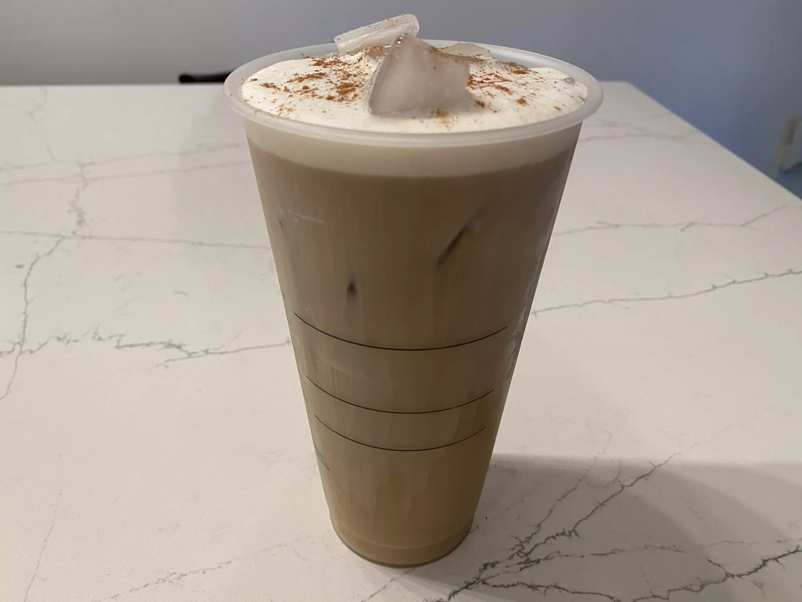

Go back
Starbucks Coffee

Description
A former Starbucks barista shared the recipe. Save on the $1.75 upcharge — it's so easy to make yourself!
Ingredients
- 1 cup heavy cream
- 1/2 cup and 2 tablespoons 2% milk
- 1/4 cup and 2 tablespoons vanilla coffee syrup
- 2 tablespoons pumpkin sauce
- Pumpkin pie spice, to top
Steps
- Combine heavy cream, milk, and vanilla syrup in a pitcher or jar. Store in refrigerator until ready to use.
- Add 3.5 ounces of sweet cream and pumpkin sauce to a blender. Blend until frothy.
- Pour cold foam on top of desired drink and top with pumpkin pie spice.